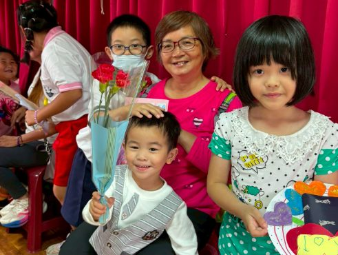
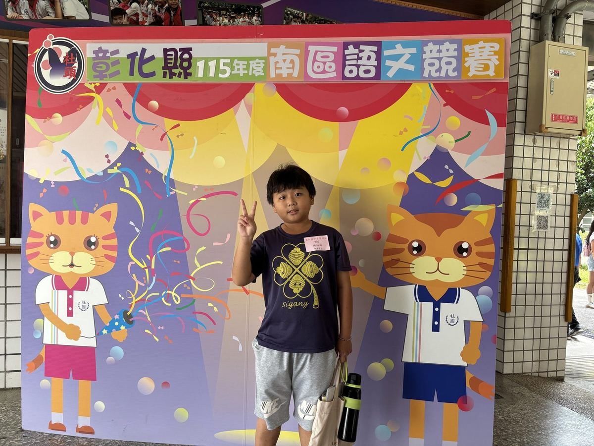
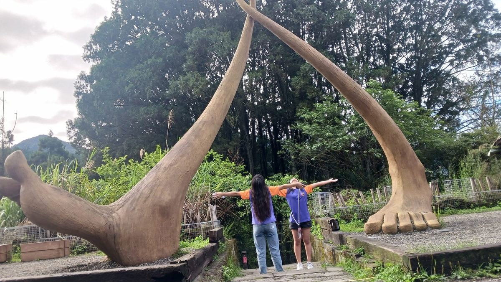
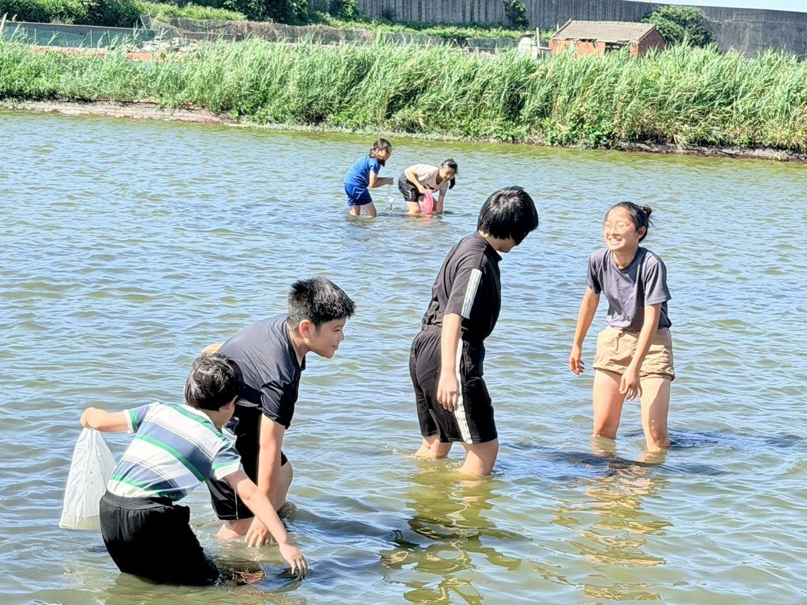
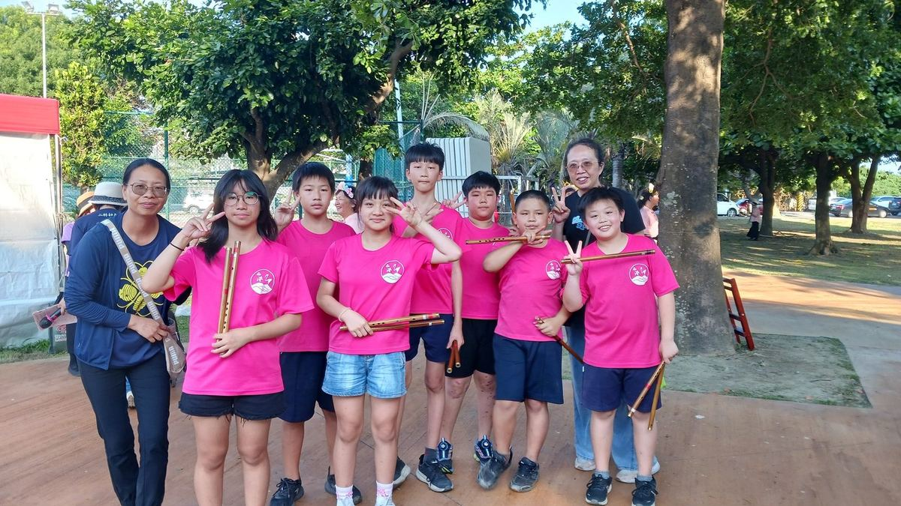
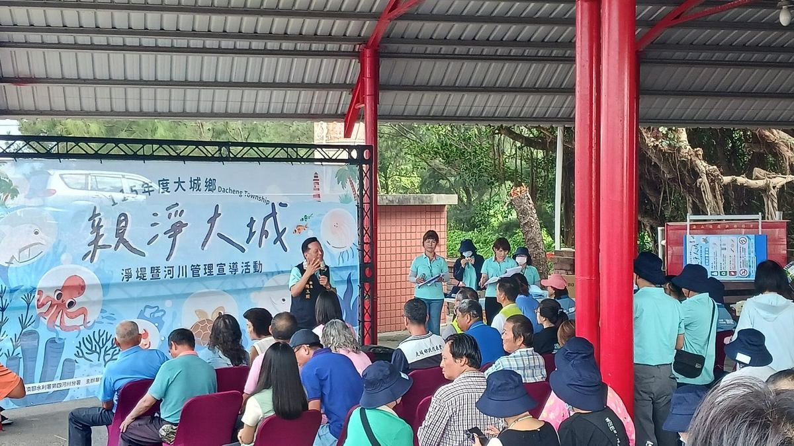

School News & Stories
News from Sigang
西港國小校園新聞
Student honours · field trips · food · ocean · art — a year of big moments and quiet days. 一年裡的大事與日常。


A campus filled with love and thanks in May. Sixth-grade taiko, preschool dance, and Grades 2–5 ocarina — handmade cards, carnations, and a tea ceremony of quiet "thank yous" to the mothers and grandmothers who came.

Tsai Yi-hsuan took 3rd place in Mandarin Recitation and Chen Yu-hsiang earned Honourable Mention in Pronunciation & Calligraphy. Coached by Teacher Hsieh Chia-wei after class hours — articulation by articulation.

Two days through Fenchihu old street & rail station, Tsou's Luzhu Cultural Park, Niupuzi Love Meadow, and Hinoki Village. Firefly walks, Tsou indigenous performances, and a graduation farewell to elementary school.

A field study with Erhlin Community College's 12-year national education project. Principal Hong opened with local aquaculture context; students waded in, surfaced with golden clams — and a few surprise river mussels.

Class 6A took the community college stage with a Chinese-flute piece learnt over the music term — sun on grass, music in breeze, an afternoon of pre-graduation gentleness, food, and applause.

Students joined the Dacheng Township Office's seawall cleanup beside Sigang Haishan Temple — a small share of stewardship for the river-and-sea environment that shapes every Sigang childhood.